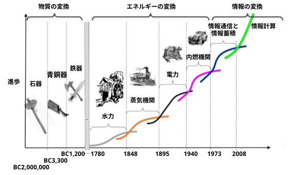
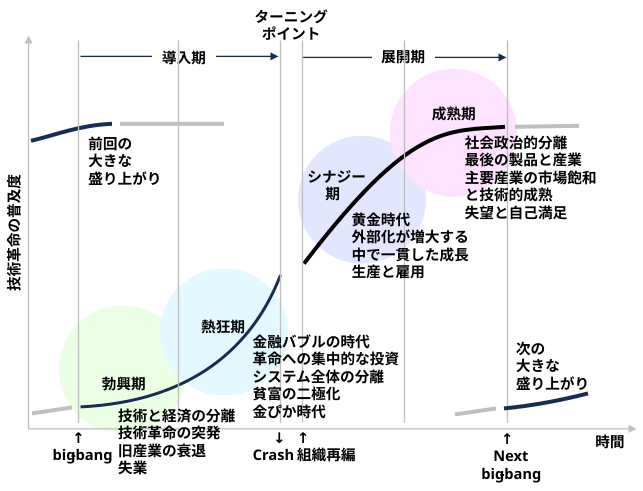

ばかげている。コンピューターの専門家たちは常識を欠いているのか？真実は、オンラインデータベースが日々の新聞に取って代わることはなく、CD-ROMが有能な教師の代わりになることもなく、コンピューターネットワークが政府の運営方法を変えることもないということだ。
・Internet may be just a passing fad as millions give up on it2000年12月5日にイギリスの新聞『デイリー・メール（Daily Mail）』に掲載された、今では歴史的な「大誤報」として有名な記事のヘッドライン
そんな中、経済学者のカルロタ・ペレスが著書を出版し、「実はウェブは終わっていない、始まったばかりだ。そして今後 25 年間で、ウェブは私たちの社会構造のあらゆる部分を根本的に変えるだろう」と述べた
Discover how technological innovation and financial capital dance through history in Perez's groundbreaking framework. Endorsed by venture capital titan Marc Andreessen, this 4.32-rated masterpiece reveals why bubbles aren't accidents but predictable patterns - essential wisdom for navigating today's AI and crypto revolutions.
ペレスが提示する画期的な理論的枠組みを通じて、技術革新と金融資本が歴史の中でどのように織りなされてきたのかを解き明かします。ベンチャーキャピタル界の巨匠マーク・アンドリーセンも絶賛し、高い評価（4.32点）を得ているこの名著は、バブルが決して単なる「事故」ではなく予測可能なパターンであることを明らかにします。現代のAIや暗号資産（クリプト）の革命期を生き抜くために不可欠な知見がここにあります。
In a world obsessed with technological disruption, we often miss the deeper patterns driving economic transformation. Carlota Perez's groundbreaking work "Technological Revolutions and Financial Capital" unveils a hidden rhythm beneath capitalism's apparent chaos-a recurring cycle of innovation, financial speculation, collapse, and prosperity that has shaped our world for over 250 years. This isn't just academic theory; it's a powerful lens that explains everything from the 1990s dot-com bubble to today's crypto mania. The book has become essential reading for venture capitalists like Marc Andreessen and tech leaders including Bill Gates, who called it "one of the most insightful economic books of our time." Even former Federal Reserve Chair Janet Yellen referenced Perez's framework when discussing economic policy during technological transitions. By revealing how financial capital and technological innovation perform their complex dance across history, Perez offers us not just understanding of the past, but a roadmap for navigating our uncertain future.
技術による破壊的変革がもてはやされる現代において、私たちは経済変革を突き動かすより深層のパターンを見落としがちです。カルロタ・ペレスの画期的な著書『Technological Revolutions and Financial Capital（技術革命と金融資本）』は、資本主義の表層的な混乱の背後に潜む「リズム」を明らかにしています。それは、イノベーション、金融投機、崩壊、そして繁栄という、250年以上にわたって世界を形作ってきた繰り返しのサイクルです。本書は単なる学術理論にとどまりません。1990年代のドットコム・バブルから今日の暗号資産（仮想通貨）ブームに至るまで、あらゆる事象を読み解くための強力な視座を提供してくれます。本書は、マーク・アンドリーセンのようなベンチャーキャピタリストや、ビル・ゲイツ（彼は本書を「現代における最も洞察に満ちた経済書の一つ」と評しました）といったテクノロジー業界のリーダーたちにとって必読の書となっています。さらには、ジャネット・イエレン前連邦準備制度理事会（FRB）議長も、技術転換期における経済政策を論じる際にペレスの枠組みを引用しています。歴史を通じて金融資本と技術革新が織りなす複雑な相互作用を解き明かすことで、ペレスは私たちに、過去への理解だけでなく、不確実な未来を切り開くための指針をも提示しているのです。

History isn't a smooth progression but a series of dramatic leaps forward, each driven by a cluster of revolutionary technologies. Perez identifies five distinct "great surges of development" that have transformed the global economy since the late 18th century: the Industrial Revolution (1771), the Age of Steam and Railways (1829), the Age of Steel and Electricity (1875), the Age of Oil and Mass Production (1908), and our current Information Age (1971). Each surge lasted approximately 40-60 years and followed a remarkably similar pattern of installation, crisis, and deployment.
歴史は滑らかに進行するものではなく、一連の劇的な飛躍を伴うものであり、その各段階は一連の革命的な技術群によって推進されてきました。ペレスは、18世紀後半以降の世界経済を変革してきた5つの「発展の大きな波（グレート・サージ）」を特定しています。それらは、産業革命（1771年）、蒸気と鉄道の時代（1829年）、鉄鋼と電気の時代（1875年）、石油と大量生産の時代（1908年）、そして現代の情報化時代（1971年）です。それぞれの波はおよそ40年から60年にわたり、導入、危機、展開という驚くほど類似したパターンをたどりました。
Each revolution begins with a "big bang" event that captures public imagination-Arkwright's mill in 1771, the "Rocket" locomotive in 1829, Carnegie's Bessemer steel plant in 1875, Ford's Model-T in 1908, and Intel's microprocessor in 1971. These aren't just impressive innovations; they're symbolic attractors that signal vast new possibilities. For instance, Arkwright's mill demonstrated the potential of mechanized production, while the Intel microprocessor revealed the transformative power of programmable computing devices.
あらゆる革命は、人々の想像力をかき立てる「ビッグバン」のような出来事から始まります。1771年のアークライトの紡績工場、1829年の蒸気機関車「ロケット号」、1875年のカーネギーによるベッセマー法製鋼所、1908年のフォード「モデルT」、そして1971年のインテル製マイクロプロセッサなどがその例です。これらは単に目覚ましい技術革新というだけでなく、新たな時代の広大な可能性を指し示す、象徴的な「惹きつけの起点（アトラクター）」なのです。例えば、アークライトの紡績工場は機械化生産の可能性を実証し、インテルのマイクロプロセッサは、プログラム可能なコンピューティング・デバイスが持つ変革の力を明らかにしました。
What makes these clusters truly revolutionary is their transformative power across the entire economy. They don't just create new industries; they provide a set of interrelated technologies and organizational principles that dramatically increase productivity across all economic sectors. The railway age wasn't just about trains-it created standardized parts, precision manufacturing, and reliable scheduling that transformed everything from agriculture to retail. Similarly, the current Information Age has revolutionized not just computing but everything from supply chain management to social interactions through principles of networked organization and instant digital communication.
こうしたクラスターが真に革命的と言えるのは、経済全体を変革する力を持っているからです。それらは単に新しい産業を生み出すだけではありません。あらゆる経済部門において生産性を劇的に向上させる、相互に関連した技術や組織原理をもたらすのです。鉄道の時代は単に列車が登場しただけの時代ではありませんでした。そこでは、部品の標準化、精密製造、そして確実な運行スケジュールといった要素が確立され、農業から小売業に至るあらゆる分野が変革されたのです。同様に、現代の情報化時代もまた、ネットワーク型組織や即時性のあるデジタル・コミュニケーションといった原理を通じて、単なるコンピューティングの領域にとどまらず、サプライチェーン管理から人々の社会的な交流に至るまで、あらゆるものを一変させました。
Each revolution emerges from a particular core country that becomes the economic leader of that era. Britain led the first two revolutions, while the third had a complex triple core (Britain, USA, and Germany). The United States led both the fourth and our current fifth revolution. This geographic concentration creates centers of innovation that eventually diffuse outward. For example, Britain's industrial supremacy in the first revolution was built on its textile innovations, canal systems, and factory organization, which gradually spread to continental Europe and North America.
それぞれの革命は、その時代の経済的リーダーとなる特定の「中核国」から生まれます。最初の2つの革命を主導したのはイギリスでしたが、第3次革命はイギリス、アメリカ、ドイツという3つの国から成る複雑な中核構造を特徴としていました。第4次革命および現在進行中の第5次革命を主導したのはアメリカです。こうした地理的な集中はイノベーションの拠点を生み出し、そこからやがて外側へと波及していきます。例えば、第1次革命におけるイギリスの産業上の優位性は、繊維産業の技術革新、運河網の整備、工場組織の確立といった要素の上に築かれ、それらはやがてヨーロッパ大陸や北米へと広がっていきました。
These revolutions aren't merely technological-they're techno-economic paradigm shifts that fundamentally alter how we organize production, distribution, and consumption. They become the "common sense" of an era, establishing mental maps for efficiency and productivity that eventually extend beyond economics to shape government, education, and social institutions. The mass production paradigm, for instance, wasn't just about assembly lines-it created standardization, specialization, hierarchical organizations, and economies of scale that reshaped everything from schooling to healthcare. This extended to urban planning (suburban development), education (grade-based classroom structure), and even food production (industrial agriculture).
こうした革命は単なる技術的な変化にとどまらず、生産・流通・消費のあり方を根本から変容させる「技術経済的パラダイムシフト」です。それらはその時代の「常識」となり、効率性や生産性に関する思考の枠組みを定着させます。やがてその影響は経済の枠を超え、行政、教育、社会制度のあり方をも形作るようになります。例えば、大量生産というパラダイムは、単に組立ラインを導入しただけではありませんでした。それは標準化、専門分業、階層型組織、そして規模の経済といった要素を生み出し、学校教育から医療に至るあらゆるものを再構築したのです。その影響は、都市計画（郊外開発）、教育（学年別クラス編成）、さらには食料生産（工業的農業）にまで及びました。
Understanding these revolutionary waves helps us recognize that what seems like permanent economic reality is actually just one phase in an ongoing process of creative destruction and renewal. Each wave brings not only technological change but also social upheaval, wealth redistribution, and institutional transformation. The transition periods between paradigms are particularly turbulent, marked by financial bubbles, economic crises, and social unrest. When we grasp this pattern, we can better anticipate what comes next and design appropriate responses rather than clinging to outdated models from previous paradigms. For example, understanding that we're in the deployment phase of the Information Age helps explain current tensions between industrial-age institutions and digital-age realities.
こうした「革命的な波」の性質を理解することは、一見すると不変の経済的現実のように思えるものが、実際には「創造的破壊」と「刷新」が続くプロセスの一局面に過ぎないということを認識する助けとなります。それぞれの波は、技術的な変化だけでなく、社会の激変、富の再分配、そして制度の変革をもたらします。特にパラダイム間の移行期は、金融バブルや経済危機、社会不安を伴う極めて不安定な時期となります。このパターンを理解すれば、過去のパラダイムにおける時代遅れのモデルに固執するのではなく、次に何が起こるかを予測し、適切な対応策を講じることが可能になります。例えば、私たちが現在「情報化時代」の「展開期」にあると理解することは、産業化時代の制度とデジタル時代の現実との間で生じている現在の緊張関係を説明する一助となります。
At the heart of Perez's analysis is the dynamic relationship between two distinct forms of capital-financial and production-that drive economic development through their complex interactions. Financial capital represents wealth in money form seeking multiplication through investments, while production capital embodies wealth-generating capacity in physical and organizational assets.
ペレスの分析の核心にあるのは、経済発展を牽引する二つの異なる形態の資本――金融資本と生産資本――の間に見られる動的な関係であり、これらは複雑な相互作用を通じて機能しています。金融資本は、投資による増殖を追求する貨幣形態の富を指すのに対し、生産資本は、物理的・組織的資産に体現された富を創出する能力を指します。
These two forms of capital operate with fundamentally different logics. Financial capital is inherently mobile, capable of shifting rapidly between investments based primarily on profit potential. Production capital, by contrast, is tied to specific technologies, equipment, and geographic locations, requiring deeper knowledge and longer time horizons. This functional separation creates a natural tension that drives the recurring pattern of technological revolutions.
これら二種類の資本は、根本的に異なる論理に基づいて機能しています。金融資本は本質的に流動性が高く、主に収益性の見込みに応じて、投資先を迅速に切り替えることが可能です。対照的に、生産資本は特定の技術、設備、地理的拠点と結びついており、より深い知識と長期的な視点を必要とします。こうした機能的な分離が自然な緊張関係を生み出し、それが技術革命の反復的なパターンを推進する原動力となっています。
During periods of technological maturity, when existing industries reach saturation and diminishing returns, financial capital grows increasingly restless. Profits from established industries accumulate faster than they can be reinvested profitably, creating pools of "idle money" seeking new opportunities. This idle capital becomes the fuel that ignites the next technological revolution.
技術が成熟し、既存の産業が飽和状態に達して収益の伸びが鈍化する時期には、金融資本が新たな投資先を求めて活発に動き出します。確立された産業から生み出される利益が、採算の取れる再投資のペースを上回る速度で蓄積され、新たな機会を模索する「遊休資金」のプールが形成されるからです。こうした遊休資本こそが、次なる技術革命の火付け役となるのです。
When a promising new technology emerges, financial capital enters a passionate "love affair" with the revolutionary entrepreneurs, rushing to fund them as they demonstrate superior profit-making potential. This relationship is initially productive, helping spread the revolution by shifting investment toward new technological trajectories. However, as excitement builds, financial capital becomes increasingly convinced it can thrive independently of production, creating a gambling mentality where paper values decouple from real economic value.
有望な新技術が登場すると、金融資本は、優れた収益性を実証する革新的な起業家たちと熱烈な「恋」に落ち、こぞって彼らへの資金提供に走ります。当初、この関係は生産的であり、新たな技術的軌道へと投資を向けることで変革の普及を後押しします。しかし、熱狂が高まるにつれて、金融資本は生産活動とは無関係に繁栄できると確信するようになり、実体経済の価値から帳簿上の価値が乖離していく、一種のギャンブル的な心理状態が生み出されていきます。
This decoupling reaches its peak during the "frenzy" phase, when financial speculation drives asset bubbles disconnected from productive capacity. Eventually, these bubbles collapse, bringing paper values back in line with real values and forcing financial capital to reconnect with production. This painful realignment creates the conditions for establishing new regulatory frameworks that can guide the next phase of development.
こうした乖離は、生産能力とは無関係な資産バブルが金融投機によって膨らむ「熱狂」の局面で頂点に達します。やがてバブルは崩壊し、帳簿上の価値は実質的な価値へと回帰させられ、金融資本は再び生産活動と結びつくことを余儀なくされます。こうした痛みを伴う再調整の過程で、次の発展段階を導く新たな規制の枠組みを構築するための条件が整うのです。
When appropriate regulations are established, a more balanced relationship emerges where financial capital serves as facilitator rather than master. During these "golden ages," production capital takes the lead, pursuing technological trajectories that create genuine wealth while ensuring market expansion through more progressive distribution. This harmonious period eventually gives way to maturity and stagnation, setting the stage for the next revolutionary cycle.
適切な規制が整備されると、金融資本が「主人」としてではなく「促進役」として機能する、より均衡のとれた関係が生まれます。こうした「黄金時代」には生産資本が主導権を握り、真の富を創出する技術的軌道を追求しつつ、より進歩的な富の分配を通じて市場の拡大を図ります。やがてこの調和のとれた時期は成熟と停滞へと移行し、次の革命的サイクルのための舞台が整うことになります。
This recurring dance between financial and production capital explains why technological revolutions follow similar patterns despite their different technological content. It's not technology alone that shapes economic development, but how these two forms of capital interact within evolving institutional frameworks.
金融資本と生産資本の間で繰り返されるこうした相互作用は、技術革命がその技術的内容の違いにかかわらず、なぜ同様のパターンをたどるのかを説明するものです。経済発展を形作るのは単なる技術ではなく、変化し続ける制度的枠組みの中で、これら二つの形態の資本がいかに相互作用するかという点にあるのです。

Each technological revolution unfolds through a predictable sequence of four distinct phases, spanning approximately 50-60 years. Understanding this pattern helps us recognize where we are in the current cycle and anticipate what comes next.
あらゆる技術革命は、約50〜60年にわたり、予測可能な4つの明確な段階を経て展開します。このパターンを理解することは、現在のサイクルにおける立ち位置を把握し、次に何が起こるかを予測する助けとなります。
The cycle begins with the "irruption" phase, when revolutionary technologies emerge against the backdrop of a stagnating economy still dominated by the previous paradigm. This creates a bifurcation in the economic structure, with dynamic new industries showing explosive growth while traditional sectors struggle. During this period, financial capital begins shifting its attention to the exciting new possibilities, funding pioneering entrepreneurs and their radical innovations. The microprocessor's emergence in 1971 exemplifies this phase, as it appeared amid the stagnation of mature mass production industries.
このサイクルは「勃興（irruption）」の段階から始まります。これは、旧来のパラダイムに依然として支配され停滞する経済を背景に、革命的な技術が登場する時期です。この段階では経済構造に二極化が生じ、ダイナミックな新興産業が爆発的な成長を遂げる一方で、伝統的な産業部門は苦境に立たされます。こうした中、金融資本は新たな可能性に目を向け始め、先駆的な起業家や彼らによる急進的なイノベーションに対して資金を供給するようになります。1971年のマイクロプロセッサの登場は、成熟した大量生産型産業が停滞する中で現れたものであり、まさにこの段階を象徴する事例と言えます。
The second phase, "frenzy," marks the height of financial speculation and economic polarization. Financial capital becomes increasingly detached from production, creating sophisticated instruments to generate wealth from existing wealth rather than from new production. Infrastructure associated with the new paradigm-canals, railways, highways, or fiber optic networks-is rapidly built out, often in chaotic and duplicative ways. Income inequality widens dramatically as new technology millionaires emerge alongside growing poverty. This phase typically ends with a spectacular financial crash, as occurred with the 2000 dot-com bubble collapse.
「熱狂（フレンジー）」と呼ばれる第2段階は、金融投機と経済的二極化が最高潮に達する時期です。金融資本は生産活動からますます遊離し、新たな生産ではなく既存の富から富を生み出すための高度な金融商品が創出されます。運河、鉄道、高速道路、あるいは光ファイバー網といった、新たなパラダイムを支えるインフラが急速に整備されますが、その過程は往々にして無秩序かつ重複を伴うものとなります。新たな技術によって巨万の富を築く人々が現れる一方で貧困も拡大し、所得格差は劇的に広がります。この段階は通常、2000年のドットコム・バブル崩壊に見られたような、劇的な金融市場の暴落をもって幕を閉じます。
Following the crash comes a crucial "turning point"-a period of reckoning when society must establish new regulatory frameworks to restore order in financial markets and reconnect financial capital with production. This institutional readjustment is essential for moving into the deployment period. The length and severity of the recession depend on how effectively society creates these new institutional arrangements. The New Deal and Bretton Woods system exemplify such frameworks following the 1929 crash.
暴落の後には、極めて重要な「転換点」が訪れます。それは、金融市場の秩序を回復させ、金融資本と生産活動を再び結びつけるための新たな規制の枠組みを社会が構築しなければならない、いわば「清算」の時期です。こうした制度的な再調整は、本格的な展開期へと移行する上で不可欠なプロセスです。不況の期間や深刻さは、社会がいかに効果的にこれらの新たな制度的枠組みを構築できるかに左右されます。1929年の暴落後に導入されたニューディール政策やブレトンウッズ体制は、そうした枠組みの好例と言えるでしょう。
If appropriate conditions are established, the economy enters the "synergy" phase-potentially a true "golden age" when the paradigm's productivity potential becomes fully visible across the economy. With infrastructure and core industries established, conditions support steady, harmonious expansion. Income redistribution enlarges consumption markets, allowing the middle class to flourish. The post-WWII boom exemplifies this phase, with mass production technologies spreading prosperity widely under appropriate regulatory frameworks.
適切な条件が整えば、経済は「シナジー」の段階に入ります。これは、そのパラダイムが持つ生産性の潜在力が経済全体で全面的に発揮される、真の「黄金時代」となり得る段階です。インフラや基幹産業が確立されることで、安定的かつ調和のとれた拡大を支える条件が整います。所得の再分配によって消費市場が拡大し、中間層が繁栄を享受できるようになります。第二次世界大戦後の好況期はこの段階の典型例であり、適切な規制の枠組みの下、大量生産技術が広範な繁栄をもたらしました。
The final "maturity" phase marks the paradigm's twilight. Despite outward signs of prosperity, markets saturate and the paradigm reaches its limits. Productivity gains diminish, and profits become harder to find. Social unrest often emerges as unfulfilled promises accumulate. Meanwhile, financial capital begins seeking alternative investments, including funding experimental technologies that will eventually form the next revolution. The 1960s exemplify this phase, with apparent prosperity masking growing social tensions and the early development of information technologies.
最後の「成熟」段階は、そのパラダイムの黄昏時を告げるものです。表面的には繁栄しているように見えても、市場は飽和状態に陥り、パラダイムは限界に達します。生産性の向上は鈍化し、利益を上げることは困難になります。満たされない約束が積み重なるにつれて、社会不安もしばしば生じます。その一方で、金融資本は代替となる投資先を求め始め、やがて次なる革命の礎となる実験的な技術への資金提供なども行われるようになります。1960年代はこの段階を象徴する時代であり、表面的な繁栄の陰で社会的な緊張が高まりつつ、情報技術の初期開発が進められていました。
This recurring pattern helps explain why periods of technological transition are inherently turbulent, with financial bubbles, crashes, and social polarization as seemingly inevitable features rather than aberrations.
この繰り返し現れるパターンは、技術転換期が本質的に激動の時期であり、金融バブル、暴落、社会的分極化が異常事態ではなく、むしろ避けられない特徴であるように見える理由を説明するのに役立つ。
Technological revolutions don't just transform production-they fundamentally reshape society through a process Schumpeter famously called "creative destruction." Each revolution creates winners and losers, disrupting established ways of life while opening new possibilities.
技術革命は単に生産のあり方を変えるだけではありません。シュンペーターが「創造的破壊」と呼んだプロセスを通じて、社会のあり方そのものを根本から作り変えるのです。それぞれの革命は勝者と敗者を生み出し、既存の生活様式を揺るがす一方で、新たな可能性を切り開きます。
The clash between new technologies and existing social arrangements creates multiple divisions: between new and mature industries, modern and traditional firms, dynamic and declining regions, and between those with relevant skills and those without. These polarizing trends intensify during the installation period, creating social tensions that eventually demand resolution.
新技術と既存の社会体制との衝突は、多岐にわたる分断を生み出します。すなわち、新興産業と成熟産業、現代的な企業と伝統的な企業、活気ある地域と衰退する地域、そして関連スキルを持つ人々と持たない人々の間での分断です。こうした二極化の傾向は、技術導入の時期に激化し、やがて解決を要する社会的な緊張関係を生じさせます。
Historical examples abound: Arkwright's water frame threatened hand spinners, Bessemer steel menaced wrought iron producers, and mass production displaced countless craft workers. Today, artificial intelligence and automation create similar anxieties. These displacements aren't incidental but fundamental to how technological progress occurs in capitalist systems.
歴史上の例は枚挙にいとまがない。アークライトの水力紡績機は手紡ぎ職人を脅かし、ベッセマー鋼は錬鉄製造業者を脅かし、大量生産は数え切れないほどの職人を職から追いやった。今日、人工知能と自動化は同様の不安を生み出している。こうした職の喪失は偶然ではなく、資本主義システムにおける技術進歩の根本的なあり方を決定づけるものだ。
The social impact isn't limited to economic displacement. Each paradigm shapes our very conception of "progress" and "modernity," establishing new norms and expectations that extend far beyond the economic sphere. The mass production paradigm, for instance, created not just new products but a whole lifestyle centered around suburban homes, automobiles, and standardized consumption patterns.
社会への影響は、単なる経済的な構造変化にとどまるものではありません。それぞれのパラダイムは、「進歩」や「近代性」に対する私たちの認識そのものを形作り、経済の領域をはるかに超えた新たな規範や期待を定着させるのです。例えば、大量生産のパラダイムは、単に新しい製品を生み出しただけでなく、郊外の住宅、自動車、そして標準化された消費様式を中心とするライフスタイルそのものを創り出しました。
These transformations generate resistance from established institutions and people with vested interests in the previous paradigm. While competitive forces drive economic change, social and institutional spheres resist due to routine, ideology, and entrenched power structures. This difference in rhythm between techno-economic and socio-institutional change explains much of the turbulence following each revolution.
こうした変革は、既存の制度や、旧来のパラダイムに既得権益を持つ人々からの抵抗を招きます。経済的な変化は競争原理によって推進される一方で、社会や制度の領域は、慣行やイデオロギー、そして強固に定着した権力構造ゆえに抵抗を示すからです。技術・経済面での変化と社会・制度面での変化との間に生じるこうした「変化のペースのずれ」こそが、各革命の後に見られる混乱の多くを説明する要因となっています。
The full unfolding of a revolution's wealth-creating potential requires significant institutional recomposition-changes in regulatory frameworks, redesign of organizations from government to education, and modifications in social behaviors. These transformations enable "golden ages" to occur, as seen with the Victorian boom, the belle epoque, and the post-WWII mass production era.
ある革命が持つ富の創出の可能性を最大限に発揮させるには、制度の大規模な再構築が必要となります。具体的には、規制の枠組みの変更、政府から教育機関に至るまでの組織の再設計、そして社会的な行動様式の変容などが求められます。こうした変革こそが、ヴィクトリア朝の好況期、「ベル・エポック」、そして第二次世界大戦後の大量生産時代に見られたような「黄金時代」の到来を可能にするのです。
Importantly, the specific form these institutional arrangements take isn't technologically determined but socially shaped through intense political struggles. The same technological revolution can lead to different social outcomes depending on the balance of power and ideas during the crucial turning point. The mass production technologies that supported American consumer capitalism also underpinned Soviet industrial development, albeit with very different distributional consequences.
重要なのは、こうした制度的取り決めがとる具体的な形態が、技術によって決定されるものではなく、激しい政治的闘争を通じて社会的に形成されるという点である。同じ技術革命であっても、決定的な転換点における力関係や思想のあり方次第で、異なる社会的帰結をもたらしうる。アメリカの消費資本主義を支えた大量生産技術は、ソ連の産業発展の基盤ともなったが、その富の分配にもたらした結果は極めて対照的なものであった。
This understanding challenges both technological determinism and the notion that markets alone can resolve the tensions created by revolutionary change. Instead, it highlights the essential role of politics and institutional innovation in determining whether technological revolutions deliver broadly shared prosperity or merely concentrate wealth in fewer hands.
こうした理解は、技術決定論や、革命的な変化によって生じる緊張関係を市場のみで解決できるとする考え方の双方に異議を唱えるものです。むしろ、技術革命が広く共有される繁栄をもたらすか、それとも単に一部の手に富を集中させるにとどまるかを決定づける上で、政治や制度的イノベーションが不可欠な役割を果たすことを浮き彫りにしています。
Technological revolutions create dramatic shifts in the global economic landscape, opening "windows of opportunity" for countries to catch up or forge ahead. Understanding these dynamics helps explain why economic leadership changes over time and how development patterns differ across regions.
技術革命は世界の経済情勢に劇的な変化をもたらし、各国が他国に追いついたり、あるいは先んじたりするための「好機（機会の窓）」を創出します。こうした力学を理解することは、なぜ経済的な主導権が時代とともに移り変わるのか、そして地域によって発展の様相がどのように異なるのかを説明する助けとなります。
During the early phases of a technological revolution, core countries with established positions in previous paradigms often struggle to adapt. Their existing investments, skills, and institutions become barriers rather than advantages. Meanwhile, countries less committed to the previous paradigm can sometimes leapfrog ahead by embracing new technologies without legacy constraints.
技術革命の初期段階において、それまでのパラダイムで確固たる地位を築いていた中核的な国々は、適応に苦慮することが少なくありません。既存の投資、スキル、制度が、強みではなくむしろ障壁となってしまうからです。一方、旧来のパラダイムへの依存度が低い国々は、過去のしがらみに縛られることなく新しい技術を積極的に取り入れることで、一気に先頭へと躍り出ることがあります。
The United States exemplifies this pattern. During the second surge (steam and railways), it was a follower catching up to Britain. By the third surge (steel and electricity), it had forged ahead alongside Germany, while Britain clung to its previous advantages. By the fourth surge (mass production), the US had established clear leadership, which it maintained into the current information age.
米国はこのパターンの典型例です。第2の波（蒸気機関と鉄道）の時期には、米国は英国に追随する立場にありました。第3の波（鉄鋼と電力）の時期には、英国が過去の優位性に固執する一方で、米国はドイツと並んで先頭集団へと躍り出ました。そして第4の波（大量生産）の時期には、米国は圧倒的な主導権を確立し、その地位を現在の情報化時代に至るまで維持し続けています。
Similar dynamics appear with Japan, which caught up dramatically during the fourth surge by embracing mass production principles, only to struggle with the transition to the information paradigm. More recently, Asian Tigers like South Korea and Taiwan leveraged the transition to information technologies to accelerate their development.
日本においても同様の力学が見られます。日本は大量生産の原則を取り入れることで第4の波の間に劇的な追いつきを達成しましたが、その後の情報化パラダイムへの移行には苦戦しました。より近年では、韓国や台湾といった「アジアの虎」が、情報技術への移行を活かして発展を加速させました。
These catching-up processes aren't smooth or automatic. They typically involve strategic coupling with financial capital from leading countries. During installation periods, when financial capital seeks higher returns than available in saturating home markets, it often flows to promising peripheral economies. This creates both opportunities and vulnerabilities.
こうしたキャッチアップ（追いつき）のプロセスは、円滑に進むものでも、自動的に進行するものでもありません。それらは通常、先進国の金融資本との戦略的な結びつきを伴います。国内市場が飽和状態にあり、より高いリターンを求めていた金融資本は、導入期（installation period）に入ると、有望な周辺国の経済へと流入することがよくあります。こうした動きは、機会をもたらすと同時に、脆弱性も生じさせることになります。
The pattern played out dramatically with Argentina in the 1890s, when refrigerated shipping technology enabled meat and wheat exports to Britain, attracting massive foreign investment before collapsing in the Baring crisis. Similarly, the Asian financial crisis of 1997 followed a period of intense capital inflow to the region's rapidly industrializing economies.
こうしたパターンは、1890年代のアルゼンチンにおいて劇的な形で展開されました。当時、冷凍輸送技術の導入によって英国への食肉や小麦の輸出が可能となり、巨額の海外投資が呼び込まれましたが、その後、ベアリング危機によって経済は崩壊に至ったのです。同様に、1997年のアジア通貨危機も、急速に工業化が進む同地域の経済圏へ資本が激しく流入した時期の後に発生しました。
These patterns of uneven development challenge simplistic notions about globalization and convergence. Rather than all countries moving steadily toward similar economic structures, we see complex patterns of leadership shifts, catching-up spurts, and periodic crises as financial capital flows in and out of regions.
こうした不均等な発展の様相は、グローバル化や収斂（しゅうれん）に関する単純化された見方に疑問を投げかけるものです。すべての国が類似した経済構造へと着実に移行していくのではなく、金融資本が地域間を流出入する中で、主導権の交代や急激なキャッチアップ、そして周期的な危機といった複雑なパターンが見て取れます。
The diffusion of technologies across the world follows a ripple-like pattern rather than simultaneous adoption. As technologies mature, their markets shift increasingly toward peripheries-first as export destinations, then as production locations. British textiles demonstrate this pattern: by 1820, 61% went to Europe and USA, but by 1840, with production tripled, 71% sold to peripheral regions while Europe and USA developed their own manufacturing capacity.
技術の世界的普及は、一斉に採用されるのではなく、波紋が広がるようなパターンをたどります。技術が成熟するにつれ、その市場は次第に周辺地域へと移行していきます。最初は輸出先として、次いで生産拠点としてです。英国の繊維産業はこのパターンを如実に示しています。1820年の時点では輸出の61%が欧州と米国向けでしたが、生産量が3倍に拡大した1840年には、欧州や米国が独自の製造能力を構築したこともあり、輸出の71%が周辺地域向けとなっていました。
Today's information revolution differs by establishing globalized production networks from early stages, creating more complex patterns of development and interdependence than previous surges. This creates both new opportunities for rapid development and new vulnerabilities to financial volatility and technological disruption.
今日の情報革命は、初期段階からグローバルな生産ネットワークを構築する点において、過去の技術革新の波とは異なる発展を遂げています。これにより、以前よりも複雑な発展や相互依存のパターンが形成され、急速な発展に向けた新たな機会が生まれる一方で、金融市場の変動や技術的破壊に対する新たな脆弱性も生じさせています。
Financial innovation plays a crucial but complex role in technological revolutions, sometimes enabling productive transformation and other times fueling destructive speculation. Understanding these different types of financial innovation helps explain both the creative and destructive aspects of capitalism's evolution.
金融イノベーションは技術革命において極めて重要かつ複雑な役割を果たしており、生産的な変革を可能にすることもあれば、破壊的な投機を助長することもあります。こうした様々な種類の金融イノベーションを理解することは、資本主義の進化が持つ創造的側面と破壊的側面の両方を説明する助けとなります。
Perez identifies six distinct types of financial innovation that emerge during different phases of each surge. Type A innovations directly support the technological revolution by funding new enterprises and infrastructure. Type B innovations facilitate trade and consumption of new products. Type C innovations help modernize mature industries with new technologies. These three types genuinely contribute to economic development by connecting finance to production.
ペレスは、各波及的発展（サージ）の異なる段階で生じる6つの異なるタイプの金融イノベーションを特定しています。タイプAのイノベーションは、新規企業やインフラへの資金供給を通じて、技術革命を直接的に支えるものです。タイプBのイノベーションは、新製品の取引や消費を促進します。タイプCのイノベーションは、新技術を用いて成熟産業の近代化を支援します。これら3つのタイプは、金融と生産を結びつけることで、経済発展に真に寄与するものです。
In contrast, Type D innovations speculate with existing assets, creating asset inflation rather than new productive capacity. Type E innovations concentrate economic power through mergers and acquisitions. Type F innovations exploit regulatory loopholes or engage in questionable practices. These latter types predominate during frenzy phases, when financial capital decouples from production.
対照的に、タイプDのイノベーションは既存の資産を対象に投機を行い、新たな生産能力ではなく資産インフレを創出する。タイプEのイノベーションは、合併・買収（M&A）を通じて経済力を集中させる。タイプFのイノベーションは、規制の抜け穴を突いたり、疑わしい慣行に関与したりするものである。こうしたタイプのイノベーションは、金融資本が生産活動から乖離する「熱狂」の局面において支配的となる。
Each technological revolution demands specific financial innovations adapted to its particular characteristics. The local banks of the first industrial revolution couldn't handle the massive railway investments of the second surge, which required joint-stock companies and limited liability. Similarly, the mass production economy needed consumer credit arrangements to transform salaries into means for purchasing "home capital goods" through installments.
技術革命はそれぞれ、その特性に応じた特定の金融イノベーションを必要とします。第一次産業革命期の地域銀行は、第二次産業革命の波に伴う巨額の鉄道投資に対応できませんでした。そうした投資には、株式会社や有限責任という仕組みが不可欠だったからです。同様に、大量生産経済においては、給与を原資として分割払いで「住宅関連の耐久消費財」を購入できるようにするための、消費者信用制度が必要とされました。
The current information revolution presents unprecedented challenges: knowledge, experience, and information have become capital goods despite being intangible. This raises fundamental questions about measuring knowledge capital, using it as collateral, and valuing infinitely reproducible products. Additionally, globalization involves transaction volumes and complexity requiring new instruments capable of handling multiple currencies and virtual, instantaneous transfers.
現在の情報革命は、かつてない課題を突きつけています。知識、経験、そして情報は、無形でありながら資本財としての性質を帯びるようになりました。このことは、知識資本の測定、それを担保として利用すること、さらには無限に複製可能な製品の価値評価といった点において、根本的な問題を提起しています。加えて、グローバル化に伴う取引量の増大や複雑化により、多通貨への対応や、仮想的かつ即時的な資金移動を可能にする新たな仕組みが求められています。
Financial innovation follows a predictable pattern across the cycle. During irruption, innovations focus on funding revolutionary technologies and modernizing established industries. In frenzy, speculative innovations proliferate as financial capital seeks higher returns through increasingly risky schemes. After the bubble bursts, regulation constrains the most dangerous practices, while innovations supporting real production flourish during synergy. As maturity approaches, financial capital again seeks alternative outlets, developing innovations that often plant seeds for both future crises and the next revolution.
金融イノベーションは、景気サイクルを通じて予測可能なパターンをたどります。「勃興期（irruption）」には、革新的な技術への資金供給や既存産業の近代化に焦点が当てられます。「熱狂期（frenzy）」に入ると、金融資本がより高いリターンを求めてリスクの高い手法を追求する中で、投機的なイノベーションが急増します。バブル崩壊後、「相乗効果期（synergy）」には規制によって最も危険な手法が抑制される一方、実体的な生産活動を支えるイノベーションが発展します。そして成熟期が近づくと、金融資本は再び新たな投資先を求め、将来の危機と次なる革命の双方の種となるようなイノベーションを生み出していくのです。
This cyclical pattern explains why periods of financial deregulation and innovation often end in crisis, yet also why attempting to permanently suppress financial innovation would block the vital process of technological renewal. The challenge is designing regulatory frameworks that channel financial creativity toward productive rather than purely speculative ends-allowing finance to serve as capitalism's dynamic engine without periodically derailing the entire system.
こうした循環的なパターンは、金融の規制緩和やイノベーションの時代がしばしば危機の到来で幕を閉じる理由を説明する一方で、金融イノベーションを恒久的に抑え込もうとすれば、技術革新という不可欠なプロセスを阻害することになる理由をも明らかにしています。ここでの課題は、金融の創造性を単なる投機ではなく生産的な目的へと向かわせるような規制の枠組みを設計することにあります。つまり、金融が資本主義のダイナミックな原動力としての役割を果たしつつも、システム全体を定期的に破綻させるような事態は招かないようにするのです。
The full potential of technological revolutions can only be realized when appropriate institutional frameworks channel their transformative power toward broadly shared prosperity. These frameworks don't emerge automatically but require deliberate social and political innovation.
技術革命が持つ潜在能力を最大限に発揮させるには、その変革の力を広く共有される繁栄へと導く適切な制度的枠組みが不可欠です。こうした枠組みは自然発生的に生まれるものではなく、意図的な社会的・政治的イノベーションを必要とします。
Each technological revolution initially appears as a shock whose diffusion encounters resistance from established institutions. The full unfolding of its wealth-creating potential requires significant institutional recomposition-changes in regulatory frameworks, redesign of organizations from government to education, and modifications in social behaviors. Without these adaptations, the revolution's benefits remain limited and unevenly distributed.
あらゆる技術革命は、当初は衝撃として現れ、その普及は既存の制度からの抵抗に直面します。その富の創出能力を最大限に発揮させるには、規制の枠組みの変更、政府から教育に至る組織の再設計、そして社会行動の変容といった、制度の抜本的な再構築が必要となります。こうした適応がなされなければ、革命の恩恵は限定的なものにとどまり、その分配も不均衡なままとなります。
The turning point between installation and deployment represents a crucial moment when society must establish new rules of the game. Financial collapse often provides the final push for necessary changes, as the unsustainability of the casino economy becomes undeniable. The Great Depression and subsequent New Deal exemplify this pattern, as do the regulatory reforms following the 2008 financial crisis.
「導入（インスタレーション）」から「展開（デプロイメント）」へと移行する局面は、社会が新たな「ゲームのルール」を確立しなければならない極めて重要な転換点となります。金融システムの崩壊は、しばしばこうした変革を促す決定的な引き金となります。というのも、いわゆる「カジノ経済」の持続不可能性がもはや否定できないものとなるからです。世界恐慌とその後のニューディール政策、あるいは2008年の金融危機に続く規制改革は、まさにこのパターンの好例と言えます。
Successful institutional frameworks accomplish three essential tasks. First, they restrain financial capital's most destructive speculative tendencies through appropriate regulation. Second, they enable market expansion by ensuring that productivity gains translate into broader purchasing power rather than concentrated wealth. Third, they provide stability and predictability that allow businesses to make long-term investments.
機能的な制度的枠組みは、3つの重要な役割を果たします。第一に、適切な規制を通じて、金融資本が持つ最も破壊的な投機的傾向を抑制します。第二に、生産性の向上が富の集中ではなく、より広範な購買力の増大につながるようにすることで、市場の拡大を可能にします。第三に、企業が長期的な投資を行えるよう、安定性と予測可能性をもたらします。
These frameworks vary significantly across different technological revolutions. The Victorian boom relied on gold standard discipline and free trade policies appropriate to its era. The mass production age required welfare states, labor protections, and demand management to sustain mass consumption markets. Today's information revolution demands its own distinctive institutional innovations suited to knowledge-based production and global interconnection.
こうした枠組みは、技術革命ごとに大きく異なります。ヴィクトリア朝時代の好況は、金本位制の規律と、その時代に即した自由貿易政策に支えられていました。大量生産の時代には、大量消費市場を維持するために、福祉国家、労働者保護、そして需要管理が必要とされました。今日の情報革命においては、知識集約型の生産や世界的な相互接続に適した、独自の制度的革新が求められています。
The specific form these frameworks take isn't technologically determined but socially shaped through political struggle. The same technological revolution can support different institutional arrangements with varying distributional consequences. Mass production technologies underpinned both American consumer capitalism and Soviet industrial development, albeit with very different social outcomes.
こうした枠組みがとる具体的な形態は、技術によって決定されるものではなく、政治的な闘争を通じて社会的に形成されるものである。同じ技術革命であっても、富の分配に異なる結果をもたらすような、多様な制度的枠組みを支えうる。例えば、大量生産技術は、アメリカの消費資本主義とソ連の産業発展の双方を支える基盤となったが、その社会的帰結は極めて対照的なものであった。
Importantly, institutional innovation isn't merely about government regulation-it encompasses changes across the entire social fabric, including business organizations, educational systems, professional associations, and cultural norms. The corporation itself represents an institutional innovation that evolved from the joint-stock company to the multidivisional firm to today's network organizations in response to changing technological paradigms.
重要なのは、制度的イノベーションが単なる政府規制にとどまらないという点です。それは、企業組織、教育システム、専門職団体、文化的規範など、社会の構造全体にわたる変革を包含するものです。企業そのものが一つの制度的イノベーションであり、技術的パラダイムの変化に応じて、株式会社から多事業部制企業、そして今日のネットワーク型組織へと進化を遂げてきました。
The current turning point presents an extraordinary challenge and opportunity for institutional creativity. The information revolution has created unprecedented capabilities for wealth creation alongside growing inequality and environmental pressures. Designing frameworks that harness these capabilities for broadly shared prosperity while addressing these challenges requires bold thinking across multiple domains-from reimagining education and work to creating new forms of corporate governance and global coordination.
現在の転換期は、制度的な創造性にとって、並外れた挑戦と機会をもたらしている。情報革命は、富の創造において前例のない能力を生み出した一方で、格差の拡大や環境問題への圧力も高めている。これらの能力を広く共有された繁栄のために活用し、同時にこれらの課題に対処する枠組みを設計するには、教育や仕事のあり方の再考から、新たな企業統治形態やグローバルな連携の構築に至るまで、複数の領域にわたる大胆な発想が求められる。
As we stand at the turning point between installation and deployment of the information revolution, we face crucial choices that will determine whether we enter a true golden age or merely a gilded one where technological marvels coexist with persistent inequality and environmental degradation.
情報革命の「導入」から「本格展開」へと至る転換点に立つ今、私たちは極めて重要な選択を迫られています。それは、真の黄金時代を築くのか、それとも、技術的な驚異と根深い不平等や環境破壊が共存する、単なる「金箔を施しただけの」時代に留まるのかを決定づける選択なのです。
Three structural tensions must be overcome to move forward productively. First, the tension between paper values and real wealth creation requires regulation that restrains casino economy practices without stifling productive innovation. The accounting scandals at companies like Enron and WorldCom reflected the extreme pressure for unrealistic profits that finance put on production during frenzy-a pattern that continues today.
生産的に前進していくためには、構造的な3つの緊張関係を克服しなければなりません。第一に、「帳簿上の価値（ペーパー・バリュー）」と「実質的な富の創出」との間の緊張関係です。これに対処するには、生産的なイノベーションを阻害することなく、カジノ経済的な手法を抑制するような規制が必要となります。エンロンやワールドコムといった企業で起きた会計不祥事は、熱狂のさなかに金融部門が生産部門に対して非現実的な利益を追求するよう強いた極度の圧力の表れであり、こうした構図は今日でも続いています。
Second, the tension between production potential and existing demand requires policies to activate new engines of growth. The information revolution has created extraordinary productive capacity, but market saturation in wealthy countries limits its full deployment. Incorporating developing countries into global growth patterns represents the most promising path forward, but requires addressing structural inequalities in the global system.
第二に、生産の潜在力と既存の需要との間にある乖離を背景に、新たな成長の原動力を活性化させる政策が求められています。情報革命は極めて高い生産能力をもたらしましたが、先進国における市場の飽和が、その能力の完全な発揮を妨げています。発展途上国を世界の成長の枠組みに組み込むことは、最も有望な道筋と言えますが、そのためには世界的なシステムに存在する構造的な不平等の是正に取り組む必要があります。
Third, the widening gap between wealthy and impoverished regions threatens both economic stability and social cohesion. The debt burdens accumulated by many developing countries during previous phases now constrain their participation in the new paradigm, creating a vicious cycle that undermines global growth potential.
第三に、富裕な地域と貧困な地域との間で拡大する格差は、経済の安定と社会の結束の双方を脅かしています。多くの発展途上国が過去の段階で抱え込んだ債務負担は、現在、新たなパラダイムへの参加を制約しており、世界的な成長の潜在力を損なう悪循環を生み出しています。
Addressing these tensions requires institutional creativity across multiple levels-from local initiatives to global governance. No single model from the past can simply be copied, as each technological revolution demands its own distinctive institutional arrangements. The mass production paradigm required standardization, hierarchy, and national regulation; the information paradigm demands flexibility, networks, and global coordination.
こうした緊張関係に対処するには、地域レベルの取り組みから地球規模のガバナンスに至るまで、多層的なレベルで制度上の創造性が求められます。過去のモデルをそのまま模倣することはできません。技術革命ごとに、それぞれ特有の制度的枠組みが必要とされるからです。大量生産のパラダイムには標準化、階層構造、そして国家による規制が必要でしたが、情報化のパラダイムには柔軟性、ネットワーク、そして地球規模の協調が求められています。
The range of possibilities remains wide. We could move toward a more sustainable and inclusive model that harnesses information technologies to address pressing social and environmental challenges. Alternatively, we might see a more polarized world where technological benefits remain concentrated while risks are socialized.
可能性の幅は依然として広いままです。情報技術を活用して喫緊の社会的・環境的課題に対処する、より持続可能で包摂的なモデルへと向かうことも考えられます。あるいは、技術の恩恵は一部に集中する一方でリスクは社会全体に転嫁されるという、より分断された世界になる可能性もあります。
The outcome will depend on our collective capacity to think systemically, recognizing that technological potential alone doesn't determine social outcomes. History shows that golden ages emerge when institutional frameworks successfully balance individual initiative with collective welfare, channeling technological dynamism toward broadly shared prosperity.
その結果は、技術の潜在力だけでは社会的な帰結が決まらないことを認識し、システム全体を俯瞰して考える我々の集団的な能力にかかっています。歴史が示すように、制度的枠組みが個人の主体性と集団の福祉とのバランスをうまく取り、技術のダイナミズムを広く共有される繁栄へと導くとき、黄金時代が到来するのです。
This turning point represents an extraordinary opportunity to shape the next phase of global development. By understanding the recurring patterns of technological revolutions and their interaction with financial capital, we can design more effective responses to current challenges-moving beyond reactive policies toward a proactive vision of sustainable prosperity.
この転換点は、世界の発展における次なる段階を形作るための極めて重要な機会です。技術革命が繰り返すパターンと、それと金融資本との相互作用を理解することで、私たちは現在の課題に対してより効果的な対応を設計することができます。つまり、単なる事後的な対応にとどまるのではなく、持続可能な繁栄に向けた先見性のあるビジョンへと踏み出すのです。
Best Quotes from the Technological Revolutions and Financial Capital Summary
『技術革命と金融資本』要約：珠玉の引用集
“
History isn't a smooth progression but a series of dramatic leaps forward.
”
歴史とは、滑らかな進展ではなく、劇的な飛躍の連続である。
“
Financial capital becomes increasingly convinced it can thrive independently of production.
”
金融資本は、生産から独立して繁栄できるという確信をますます強めている。
“
Each wave brings not only technological change but also social upheaval.
”
それぞれの波は、技術的な変化だけでなく、社会的な激変ももたらします。
“
Understanding these revolutionary waves helps us recognize that what seems like permanent economic reality is actually just one phase.
”
こうした革命的な波を理解することは、永続的な経済の現実のように見えるものが、実際には単なる一つの段階に過ぎないということを認識する助けとなります。
“
Financial capital is inherently mobile.
”
金融資本は本質的に流動的なものである。